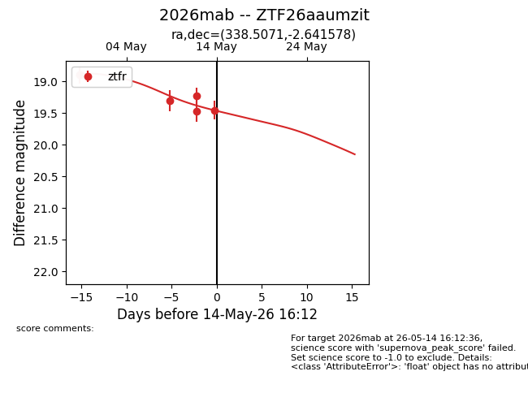
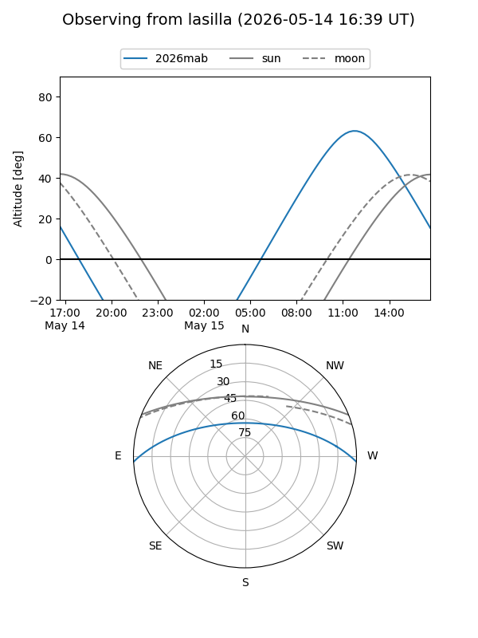
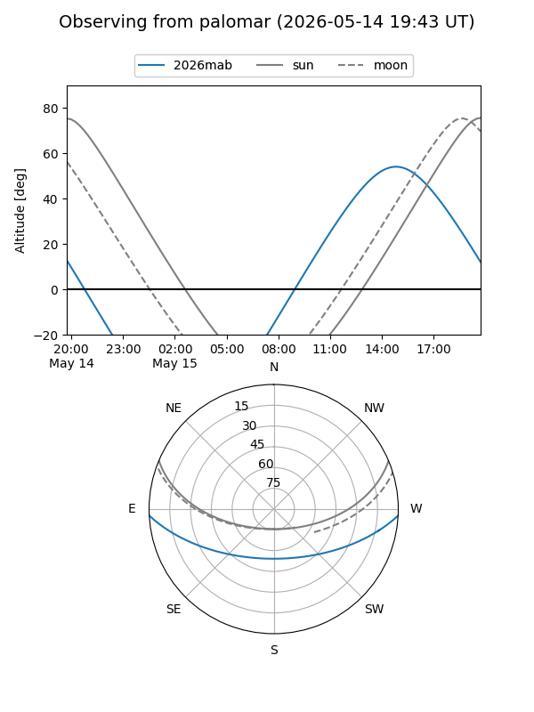
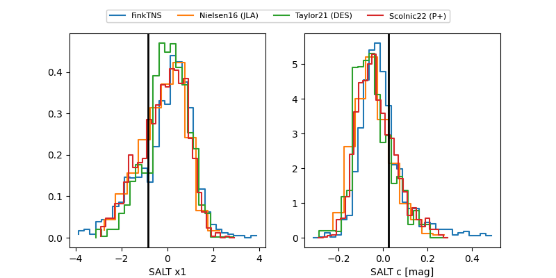

2026mab
Target 2026mab at 2026-05-14 16:14
Aliases and brokers:
FINK: link
Lasair: link
ALeRCE: link
TNS: link
YSE: link
alt names
ZTF26aaumzit (ztf,fink_ztf)
2026mab (tns,yse)
Coordinates:
equatorial (ra, dec) = 338.5071,-2.64158
equatorial (HMS+DMS) = 22:34:01.71,-02:38:29.68
galactic (l, b) = (63.6579,-49.02481)
Flags:
Photometry:
last ztfr=19.45
5 ztfr detections
Lightcurve

Visibility


Additional plots
